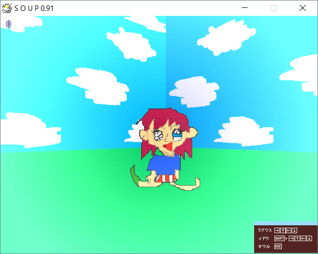

| Photo |  |
| Day | 2 |
| Internal Name | takroom2 |
| Creator | Akira Takagi |
| Prefix | tak |
Drawing Room (takroom2) is a room accessible from Day 2. It was made by Akira Takagi.
The room style is reminiscent of a child's drawing, using simple colors in it's design, but the room also has melancholic music playing, giving it a nostalgic feeling of wanting to go back to simpler times in a person's life.
The object seems to be that of a crudely drawn kid with large eyes and messy red hair, which further cements the initial vibes of the room.
A corrupted version of this room later appears in Day 5.
◄ Cyber Room (wanroom0) | Go back to Rooms | Dark Blue Room (ruaroom2) ►